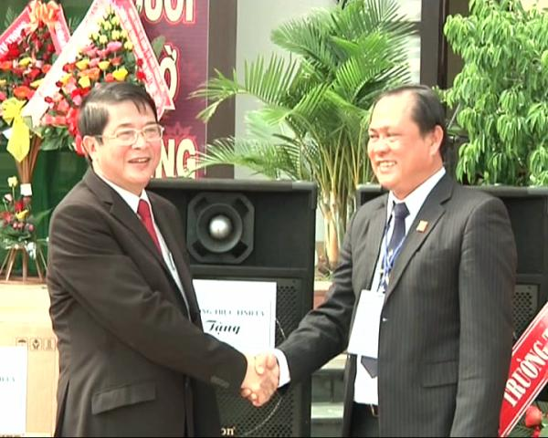

Bí thư tỉnh ủy Nguyễn Đức Hải dự lễ kỷ niệm 10 năm thành lập trường THPT chuyên Nguyễn Bỉnh Khiêm

Lần cập nhật cuối lúc Thứ sáu, 05 Tháng 10 2012 17:31 Viết bởi Administrator Thứ sáu, 05 Tháng 10 2012 17:08
Sáng 3/9, trường THPT chuyên Nguyễn Bỉnh Khiêm tổ chức lễ kỷ niệm 10 năm thành lập và khai giảng năm học mới 2012 – 2013. Bí thư tỉnh ủy Nguyễn Đức Hải đến dự lễ và chia vui cùng với thầy và trò nhà trường.

Được thành lập từ năm 2002, mặc dù điều kiện cơ sở vật chất cũng như đội ngũ giáo viên còn nhiều khó khăn nhưng ngay từ đầu, trường THPT chuyên Nguyễn Bỉnh Khiêm đã khẳng định được ngôi trường đào tạo nguồn nhân lực chất lượng cao của tỉnh. Và đến nay, trường THPT chuyên Nguyễn Bỉnh Khiêm Quảng Nam đã có vị trí trên bản đồ thành tích chung của hệ thống trường chuyên khu vực miền Trung và cả nước. 10 lần tham gia kỳ thi Olympic 30/4, học sinh của trường đã giành được 189 huy chương, trong đó 48 huy chương Vàng, 68 huy chương Bạc và 79 huy chương Đồng; trường còn giành được 86 giải học sinh giỏi quốc gia; hằng năm tỷ lệ học sinh đỗ váo các trường đại học trên 90%, năm học 2010 – 2011, trường được xếp thứ 31 trong tốp 100 trường THPT có tỷ lệ học sinh trúng tuyển Đại học cao nhất nước. Đặc biệt, từ ngôi trường này có nhiều học sinh nay đã thành tiến sĩ, thạc sĩ và những du học sinh có thành tích cao ở nước ngoài như Tôn Mỹ Uyên, Hồ Phú Quốc, Nguyễn Đình Duy, Nguyễn Dương Quỳnh Anh...
Thay mặt lãnh đạo tỉnh, Bí thư tỉnh ủy Nguyễn Đức Hải biểu dương những thành tích của thầy và trò nhà trường đã đạt được trong 10 năm qua; đồng thời khẳng định đây là ngôi trường có chất lượng giáo dục – đào tạo cao hàng đầu của tỉnh. Lãnh đạo tỉnh cũng như phụ huynh kỳ vọng vào đội ngũ các thầy cô giáo và các em học sinh tiếp tục gặt hái được nhiều thành tích cao trong dạy và học.
Dịp này, trường THPT chuyên Nguyễn Bỉnh Khiêm khai giảng năm học mới 2012 – 2013, chào đón 693 học sinh đến trường, trong đó có 253 học sinh lớp 10. Bí thư tỉnh ủy Nguyễn Đức Hải đã tặng một dàn amply cho nhà trường. Ngân hàng SACOMBANK đã trao 9 suất học bổng cho học sinh có hoàn cảnh khó khăn của trường THPT chuyên Nguyễn Bỉnh Khiêm. Mỗi suất trị giá 1triệu đồng. Ngoài ra, nhân dịp khai giảng năm học mới, từ ngày 3 đến ngày 5 tháng 9, Ngân hàng Thương mại cổ phần Sài gòn Thương Tín Sacombank còn trao 36 suất học bổng cho học sinh khó khăn và đạt kết quả cao trong học tập của 4 trường THPT khác trên địa bàn tỉnh.
Thay mặt lãnh đạo tỉnh, Bí thư tỉnh ủy Nguyễn Đức Hải biểu dương những thành tích của thầy và trò nhà trường đã đạt được trong 10 năm qua; đồng thời khẳng định đây là ngôi trường có chất lượng giáo dục – đào tạo cao hàng đầu của tỉnh. Lãnh đạo tỉnh cũng như phụ huynh kỳ vọng vào đội ngũ các thầy cô giáo và các em học sinh tiếp tục gặt hái được nhiều thành tích cao trong dạy và học.
Dịp này, trường THPT chuyên Nguyễn Bỉnh Khiêm khai giảng năm học mới 2012 – 2013, chào đón 693 học sinh đến trường, trong đó có 253 học sinh lớp 10. Bí thư tỉnh ủy Nguyễn Đức Hải đã tặng một dàn amply cho nhà trường. Ngân hàng SACOMBANK đã trao 9 suất học bổng cho học sinh có hoàn cảnh khó khăn của trường THPT chuyên Nguyễn Bỉnh Khiêm. Mỗi suất trị giá 1triệu đồng. Ngoài ra, nhân dịp khai giảng năm học mới, từ ngày 3 đến ngày 5 tháng 9, Ngân hàng Thương mại cổ phần Sài gòn Thương Tín Sacombank còn trao 36 suất học bổng cho học sinh khó khăn và đạt kết quả cao trong học tập của 4 trường THPT khác trên địa bàn tỉnh.
Tác giả bài viết: DUY UYÊN - LY LAN
Tin mới hơn:
- 05/12/2012 06:25 - Trung tâm Phát triển nguồn nhân lực CLC làm việc v…
- 05/12/2012 06:17 - Tin an toàn giao thông
- 12/11/2012 08:30 - Kết quả xếp giải thi HSG lớp 12
- 10/11/2012 08:29 - Kết quả thi HSG 12 năm học 2012-2013
- 08/10/2012 10:36 - Hội nghị nhà giáo - lao động năm học 2012 - 2013 v…
Tin cũ hơn:
- 03/09/2012 00:00 - Nét bút tri ân - Chia sẽ lòng tri ân